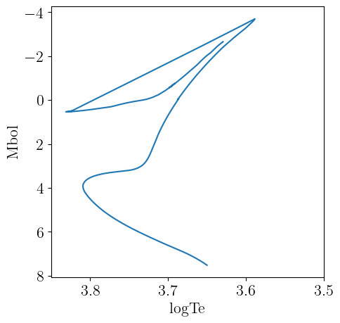
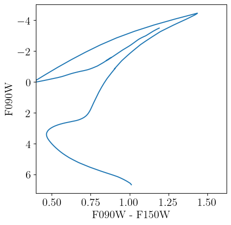

BaSTIv1
There are currently some issues with certain track sets (defined by a specific combination of [α/Fe], Z, and "canonical" status) as not all track sets have the number of initial stellar masses that are expected from the descriptions in the BaSTI papers. For example, for p=BaSTILibrary(0, false), corresponding to [α/Fe] = 0 and canonical=false, the individual track sets with different Z have numbers of initial stellar masses that range from 22 (Z=1e-5) to 34 (z=0.05) – these two metallicities are the extended ones presented in Pietrinferni et al. [15], while the metallicities presented in Pietrinferni et al. [16] all have 25 initial stellar masses, though we expect 41 from the description in Pietrinferni et al. [16].
However, for the canonical models p=BaSTILibrary(0, true), there are 40 initial masses for the Pietrinferni et al. [16] tracks and (30, 37) for Z=(1e-5, 0.05) from Pietrinferni et al. [15]. For [α/Fe] = 0.4, presented in Pietrinferni et al. [17], average number of tracks per metallicity is 36 for canonical models and is either 17 or 26 for the non-canonical models.
These low numbers of tracks create interpolation error when creating isochrones. Going to follow up with the BaSTI team and see if I can get new files that are not missing tracks. For now, I think the solar-scaled canonical models are the most complete and should be fairly safe to use.
Here we describe the interface we provide to the older BaSTI stellar models presented in Pietrinferni et al. [16], Pietrinferni et al. [17] and Pietrinferni et al. [15] – as there are newer BaSTI models (e.g., Hidalgo et al. [18]), we describe these older models as BaSTIv1 to differentiate them. BaSTIv1 specific code is housed in the BaSTIv1 submodule, which can be accessed as
using StellarTracks.BaSTIv1 # load all exported methods
using StellarTracks.BaSTIv1: BaSTIv1Library, X, Y, Z # load specific methodsData Acquisition
The tracks will be downloaded automatically using DataDeps.jl the first time you try to access them. The main access point we provide is BaSTIv1Library, which will load and make available the full library of stellar tracks. The first time you call this method, you will be prompted to download the required data files. The total data volume is ~32 MB. Information on customizing the install location is available here. The data can be uninstalled by running using DataDeps; rm(datadep"BaSTIv1"; recursive=true). With all the tracks available, we are able to perform operations like interpolating isochrones at any age and metallicity within the BaSTIv1 parameter space.
Grid Properties
The BaSTIv1 model grid contains models for the following metal mass fractions:
BaSTIv1.zgrid13-element Vector{Float32}:
1.0f-5
0.0001
0.0003
0.0006
0.001
0.002
0.004
0.008
0.01
0.0198
0.03
0.04
0.05which correspond to the following values of [M/H]:
MH.(BaSTIv1Chemistry(), BaSTIv1.zgrid)13-element Vector{Float64}:
-3.325301806420611
-2.325177536208652
-1.8477799664569527
-1.5463352158247927
-1.3239328427169887
-1.0215156928176636
-0.7176980256231165
-0.4110384247638239
-0.3112860364106089
-0.00041762882359419606
0.19533189088077618
0.33580591618580513
0.4488276373116895Note that the BaSTIv1 stellar models only include initial stellar masses from 0.5 to 10 solar masses. They therefore do not include the lower main sequence that can be important for modeling very nearby stellar populations. Nor do they include very high-mass stars (e.g., O-type stars) that can be important when studying populations with high present0-day SFRs.
The BaSTIv1 grid includes models with scaled-solar abundance patterns as well as α-enhanced models with an average [α/Fe]=0.4 (presented in Pietrinferni et al. [17]). Recall that the α elements are O, Ne, Mg, Si, S, Ar, Ca, and Ti. These α-enhanced models are useful for modeling low-metallicity stars that formed prior to significant iron enrichment from type Ia supernovae. These stars are most common in the Galactic halo and low-mass dwarf galaxies. Note that the conversion between metal mass fraction $Z$ and logarithmic metal abundance [M/H] is the same for the scaled-solar models as for the α-enhanced models, however the iron abundance [Fe/H] is not the same as [M/H] – see Table 1 of Pietrinferni et al. [17].
The BaSTIv1 models are also differentiated by whether they include convective overshooting during central H-burning. So-called "canonical" models do not including overshooting, while "non-canonical" models do include a convective overshooting treatment (see section 3 of Pietrinferni et al. [16]). Inclusion of convective overshooting during central H-burning mainly changes the main sequence turn-off morphology and generally results in better fits to simple stellar populations like globular clusters. For methods in this module that take a canonical::Bool argument, a value of canonical=true indicates you want to use the "canonical" stellar models, while a value of canonical=false means you want to use the "non-canonical" models that include convective core overshooting.
Examples
First we load the full BaSTIv1 library, which is downloaded via DataDeps.jl if not already available.
using StellarTracks.BaSTIv1
p = BaSTIv1Library(0.0, false)Structure of interpolants for the older BaSTI library of non-canonical stellar tracks with [α/Fe]=0.0. Valid range of metallicities is (-3.325301806420611, 0.4488276373116895).Now we use the BaSTIv1Library to interpolate an isochrone at log10(age [yr]) = 10.05 and logarithmic metallicity [M/H]=-1.234. The isochrone is returned as a NamedTuple.
iso = isochrone(p, 10.05, -1.234)(eep = [64, 65, 66, 67, 68, 69, 70, 71, 72, 73 … 1990, 1991, 1992, 1993, 1994, 1995, 1996, 1997, 1998, 1999], m_ini = [0.5044800543454242, 0.5068894318139919, 0.5092615690548389, 0.5115980640970774, 0.5138999592412005, 0.5161679938971195, 0.5184034439165491, 0.5206069746852968, 0.5227793739216225, 0.5249220849948786 … 0.8526159088538295, 0.852616986604793, 0.852618441270442, 0.8526197702978622, 0.8526210155664636, 0.8526223027144746, 0.8526238411389422, 0.8526249623308965, 0.8526261641585073, 0.8526275366269183], logTe = [3.6497968331938226, 3.6507010685489405, 3.651618378717504, 3.6525429957379734, 3.653474726376954, 3.654417225521311, 3.6553654786736467, 3.656316142457985, 3.657277109672735, 3.658242278051537 … 3.6427629229404204, 3.641698879635766, 3.6405959204798406, 3.639412626024951, 3.638077013001864, 3.63656053437479, 3.6347936515850434, 3.6329263258639215, 3.631172244257361, 3.6291993278930783], Mbol = [7.524687435820752, 7.5016376148065556, 7.478887852943645, 7.456410687640695, 7.434218720928948, 7.412296083087541, 7.390633881728102, 7.369227925987865, 7.348038760312471, 7.327092268405785 … -2.2378058644125685, -2.2748827473402216, -2.3134314431188256, -2.354063438231693, -2.398498224702637, -2.4472211240722763, -2.5012526372517985, -2.55533882871992, -2.6039806101645646, -2.6546963455233805], logg = [4.8068664039737845, 4.803263713464528, 4.799776136865614, 4.796377161607754, 4.79307558897849, 4.789887096523525, 4.786793391800022, 4.783784051236483, 4.780876730300411, 4.778063513071689 … 0.990287847854349, 0.9709459194302793, 0.9505121692657398, 0.9285866166823085, 0.9042833213102169, 0.8776018250442391, 0.8483878466849836, 0.8185126794306864, 0.7904315432156427, 0.7611911070474179], logL = [-1.1138749672382064, -1.1046550149906698, -1.0955551579292215, -1.0865642776278532, -1.0776875122134373, -1.0689184570768742, -1.0602535359394774, -1.051691146553288, -1.0432155137866579, -1.034836873858787 … 2.791122359945216, 2.805953046109222, 2.82137259657087, 2.8376253417891495, 2.855399275700867, 2.8748884109822317, 2.8965010884042472, 2.9181354786611013, 2.9375923394332575, 2.9578785330662014])The NamedTuple returned by isochrone can be converted to table types, like TypedTables.Table to simplify further use.
using TypedTables: Table
Table(iso)Table with 6 columns and 1936 rows:
eep m_ini logTe Mbol logg logL
┌────────────────────────────────────────────────────
1 │ 64 0.50448 3.6498 7.52469 4.80687 -1.11387
2 │ 65 0.506889 3.6507 7.50164 4.80326 -1.10466
3 │ 66 0.509262 3.65162 7.47889 4.79978 -1.09556
4 │ 67 0.511598 3.65254 7.45641 4.79638 -1.08656
5 │ 68 0.5139 3.65347 7.43422 4.79308 -1.07769
6 │ 69 0.516168 3.65442 7.4123 4.78989 -1.06892
7 │ 70 0.518403 3.65537 7.39063 4.78679 -1.06025
8 │ 71 0.520607 3.65632 7.36923 4.78378 -1.05169
9 │ 72 0.522779 3.65728 7.34804 4.78088 -1.04322
10 │ 73 0.524922 3.65824 7.32709 4.77806 -1.03484
11 │ 74 0.527035 3.65921 7.30638 4.77534 -1.02655
12 │ 75 0.52912 3.66019 7.28592 4.77274 -1.01837
13 │ 76 0.531177 3.66116 7.26565 4.7702 -1.01026
14 │ 77 0.533208 3.66215 7.24559 4.76778 -1.00224
15 │ 78 0.535211 3.66313 7.22574 4.76542 -0.994297
16 │ 79 0.53719 3.66411 7.20612 4.76318 -0.986447
17 │ 80 0.539143 3.6651 7.18667 4.76101 -0.978668
⋮ │ ⋮ ⋮ ⋮ ⋮ ⋮ ⋮The theoretical isochrone is plotted below.
We can load a grid of bolometric corrections from BolometricCorrections.jl to add observational magnitudes to the theoretical isochrone. In this example, we use the MIST bolometric correction grid, which offers bolometric corrections for varying metallicities ([M/H]) and reddening values ($A_V$).
Because the solar metallicity calibrations of BaSTIv1 and MIST are not exactly the same, the protostellar metal mass fraction $Z$ that corresponds to a given [M/H] is not the same between the two libraries. The isochrone interface will convert the given [M/H], which is assumed to be the desired metallicity in the stellar track library, to its corresponding metal mass fraction, and then convert from the metal mass fraction to the correct [M/H] for the assumed chemical model of the bolometric correction grid.
This method returns a TypedTables.Table that contains the information from both sources. Here we evaluate an isochrone with log10(age [yr]) = 10.05, [M/H]=-1.234, and $A_v=0.02$ mag.
using BolometricCorrections.MIST: MISTBCGrid
m = MISTBCGrid("JWST")
iso = isochrone(p, m, 10.05, -1.234, 0.02)Table with 35 columns and 1936 rows:
eep m_ini logTe Mbol logg logL F070W F090W ⋯
┌─────────────────────────────────────────────────────────────────────────
1 │ 64 0.50448 3.6498 7.52469 4.80687 -1.11387 7.19728 6.65854 ⋯
2 │ 65 0.506889 3.6507 7.50164 4.80326 -1.10466 7.17254 6.63647 ⋯
3 │ 66 0.509262 3.65162 7.47889 4.79978 -1.09556 7.14806 6.61471 ⋯
4 │ 67 0.511598 3.65254 7.45641 4.79638 -1.08656 7.12382 6.59322 ⋯
5 │ 68 0.5139 3.65347 7.43422 4.79308 -1.07769 7.09997 6.572 ⋯
6 │ 69 0.516168 3.65442 7.4123 4.78989 -1.06892 7.07665 6.551 ⋯
7 │ 70 0.518403 3.65537 7.39063 4.78679 -1.06025 7.05357 6.53027 ⋯
8 │ 71 0.520607 3.65632 7.36923 4.78378 -1.05169 7.03073 6.50978 ⋯
9 │ 72 0.522779 3.65728 7.34804 4.78088 -1.04322 7.00808 6.48951 ⋯
10 │ 73 0.524922 3.65824 7.32709 4.77806 -1.03484 6.98566 6.46948 ⋯
11 │ 74 0.527035 3.65921 7.30638 4.77534 -1.02655 6.96347 6.44969 ⋯
12 │ 75 0.52912 3.66019 7.28592 4.77274 -1.01837 6.94149 6.43014 ⋯
13 │ 76 0.531177 3.66116 7.26565 4.7702 -1.01026 6.9197 6.41078 ⋯
14 │ 77 0.533208 3.66215 7.24559 4.76778 -1.00224 6.89809 6.39163 ⋯
15 │ 78 0.535211 3.66313 7.22574 4.76542 -0.994297 6.87669 6.37268 ⋯
16 │ 79 0.53719 3.66411 7.20612 4.76318 -0.986447 6.8555 6.35395 ⋯
17 │ 80 0.539143 3.6651 7.18667 4.76101 -0.978668 6.83448 6.3354 ⋯
⋮ │ ⋮ ⋮ ⋮ ⋮ ⋮ ⋮ ⋮ ⋮ ⋱All available columns in the isochrone can be obtained with TypedTables.columnnames.
using TypedTables: columnnames
columnnames(iso)(:eep, :m_ini, :logTe, :Mbol, :logg, :logL, :F070W, :F090W, :F115W, :F140M, :F150W2, :F150W, :F162M, :F164N, :F182M, :F187N, :F200W, :F210M, :F212N, :F250M, :F277W, :F300M, :F322W2, :F323N, :F335M, :F356W, :F360M, :F405N, :F410M, :F430M, :F444W, :F460M, :F466N, :F470N, :F480M)A color-magnitude diagram constructed from the isochrone is plotted below.
Library API
StellarTracks.BaSTIv1.BaSTIv1Library — TypeBaSTIv1Library(α_fe::Number=0, canonical::Bool=false)BaSTIv1Library implements the AbstractTrackLibrary interface for the older BaSTI stellar evolution models presented in Pietrinferni et al. [16], Pietrinferni et al. [17] and Pietrinferni et al. [15]. Instances can be constructed by providing a supported α_fe argument for the [α/Fe] enrichment, which must be equal to either 0 (scaled-solar abundances) or 0.4 with a default of α_fe=0. You must also provide a Bool (either true or false) for the canonical argument – if true, we load the "canonical" models which do not include convective overshooting from the Schwarzschild boundary. The non-canonical models (used when canonical=false) do include a treatment of convective overshoot (see section 3 of Pietrinferni et al. [16]) which mainly alters the main sequence turn-off morphology.
If you construct an instance as p = BaSTIv1Library(0.0, false), it is callable as
p(mh::Number)to interpolate the full library to a new metallicity (returning aBaSTIv1TrackSet), orp(mh::Number, M::Number)to interpolate the tracks to a specific metallicity and initial stellar mass (returning aBaSTIv1Track).
This type also supports isochrone construction (see isochrone).
Examples
julia> p = BaSTIv1Library(0.0, false)
Structure of interpolants for the older BaSTI library of non-canonical stellar tracks with [α/Fe]=0.0. Valid range of metallicities is (-3.325301806420611, 0.4488276373116895).
julia> isochrone(p, 10.05, -2.01) isa NamedTuple
trueStellarTracks.isochrone — Methodisochrone(p::BaSTIv1Library, logAge::Number, mh::Number)Interpolates properties of the stellar tracks in the library at the requested logarithmic age (logAge = log10(age [yr])) and logarithmic metallicity [M/H] = mh. Returns a NamedTuple containing the properties listed below:
eep: Equivalent evolutionary pointsm_ini: Initial stellar masses, in units of solar masses.logTe: Base-10 logarithm of the effective temperature [K] of the stellar model.Mbol: Bolometric luminosity of the stellar model.logg: Surface gravity of the stellar model.
The full library is principally a set of BaSTIv1TrackSets, with one track set per unique chemical composition. We do not presently offer interpolation as a function of [α/Fe] or between the canonical and non-canonical models, so the individual track sets in the library vary only in total metallicity (i.e., $Z$).
Track Set API
StellarTracks.BaSTIv1.BaSTIv1TrackSet — TypeBaSTIv1TrackSet(zval::Number, α_fe::Number=0, canonical::Bool=false)BaSTIv1TrackSet implements the AbstractTrackSet interface for the older BaSTI stellar evolution library [15–17].
julia> ts = StellarTracks.BaSTIv1.BaSTIv1TrackSet(1e-3, 0.0, false)
Non-canonical BaSTIv1TrackSet with MH=-1.3239328427169887, [α/Fe]=0.0, Z=0.001, Y=0.24640000006649643, 1999 EEPs and 25 initial stellar mass points.
julia> ts(1.01) # Interpolate track at new initial mass
Non-canonical BaSTIv1Track with M_ini=1.01, MH=-1.3239328427169887, [α/Fe]=0.0, Z=0.001, Y=0.24640000006649643, X=0.7525999998860061.
julia> isochrone(ts, 10.0) isa NamedTuple # Interpolate isochrone at `log10(age [yr]) = 10`
trueIndividual Tracks API
StellarTracks.BaSTIv1.BaSTIv1Track — TypeBaSTIv1Track(zval::Number, mass::Number, α_fe::Number, canonical::Bool)BaSTIv1Track implements the AbstractTrack interface for the older BaSTI stellar evolution library [15–17].
Note that due to the organization of the BaSTIv1 data files, this method requires constructing a BaSTIv1TrackSet and is therefore not efficient if your aim is to construct multiple tracks of the same metallicity zval, α-enrichment α_fe, and core overshoot prescription (canonical=true uses models with no convective overshooting). In this case, you should construct a BaSTIv1TrackSet and call it with the masses you want, e.g., ts = BaSTIv1TrackSet(0.0001, 0.0, false); ts.([0.61, 0.82]).
julia> track = StellarTracks.BaSTIv1.BaSTIv1Track(0.0001, 0.81, 0.0, true)
Canonical BaSTIv1Track with M_ini=0.81, MH=-2.325177525233962, [α/Fe]=0.0, Z=0.0001, Y=0.24514, X=0.75476.
julia> track(9.0) # interpolate track at log10(age [yr]) = 9
(log_L = -0.15993145249931723, log_Teff = 3.7952196900545214, log_g = 4.640365439934053)BaSTIv1 References
This page cites the following references:
- [15]
- A. Pietrinferni, S. Cassisi, M. Salaris and S. Hidalgo. The BaSTI Stellar Evolution Database: models for extremely metal-poor and super-metal-rich stellar populations. A&A 558, A46 (2013).
- [16]
- A. Pietrinferni, S. Cassisi, M. Salaris and F. Castelli. A Large Stellar Evolution Database for Population Synthesis Studies. I. Scaled Solar Models and Isochrones. ApJ 612, 168–190 (2004).
- [17]
- A. Pietrinferni, S. Cassisi, M. Salaris and F. Castelli. A Large Stellar Evolution Database for Population Synthesis Studies. II. Stellar Models and Isochrones for an alpha-enhanced Metal Distribution. ApJ 642, 797–812 (2006).
- [18]
- S. L. Hidalgo, A. Pietrinferni, S. Cassisi, M. Salaris, A. Mucciarelli, A. Savino, A. Aparicio, V. S. Aguirre and K. Verma. The Updated BaSTI Stellar Evolution Models and Isochrones. I. Solar-scaled Calculations. ApJ 856, 125 (2018).